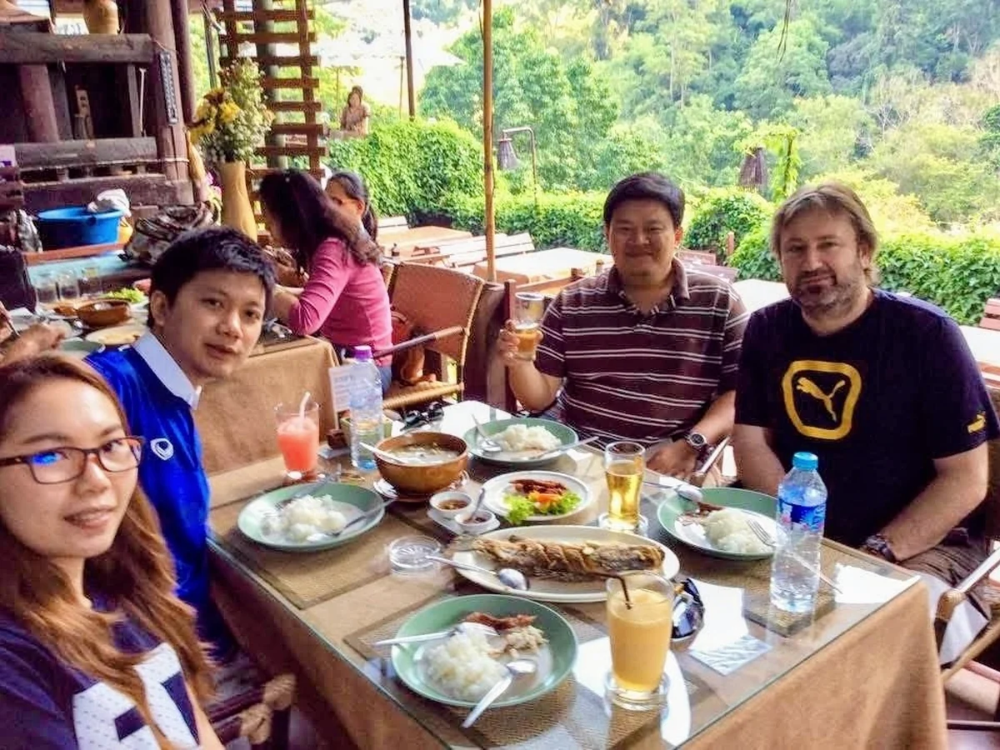

Pathogen genomics · evolution · One Health
Using population genomics, epidemiology and AI to study transmission, antimicrobial resistance and disease across people, animals and environments.
University of Oxford · Ineos Oxford Institute for Antimicrobial Research

CampylobacterAntimicrobial resistanceOne HealthHost adaptationOpen genomic toolsAI and prediction
Research themes
How do bacteria adapt to new hosts?
How can genomic analysis be made accessible?
Can genomics and AI predict resistance and disease?
Projects


Child health in the Peruvian Amazon
Child health, carriage and antimicrobial resistance.
Project overview →

Recent publication
Protocols for genomic epidemiology and source attribution of enteric bacteria causing diarrhoeal disease across Africa
PaperRecent story
Sampling an interconnected One Health system
Read storyPeople & supervision
Researchers and opportunities.
Meet the current doctoral researchers and learn how projects are supervised.
Meet the teamOpen resources
Protocols, code and data.
Reusable laboratory procedures, genomic workflows and project infrastructure.
Browse resources